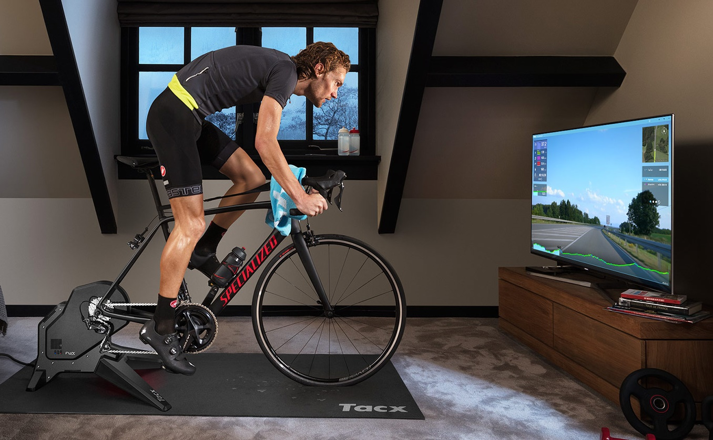
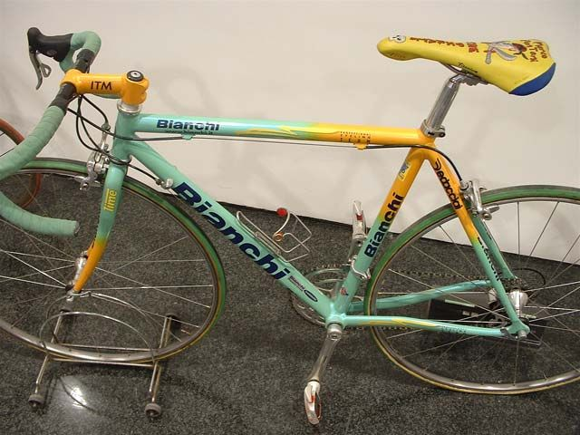
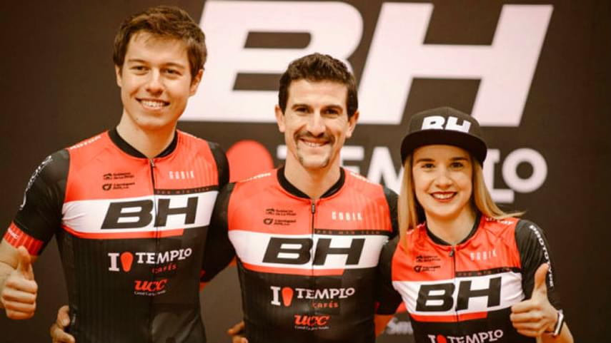

 |
Jason Osborne se proclama campeón del Mundo de Ciclismo VirtualEl ciclista alemán Jason Osborne se ha hecho con el título de Campeón del Mundo de Ciclismo Virtual al imponerse este miércoles en una prueba celebrada de forma virtual sobre un trazado de 50 kilómetros con 483 metros de desnivel en la isla ficticia de Watopia. Con un tiempo de 1 hora, 5 minutos y 15 segundos, Osborne se impuso en la prueba indoor por delante de los daneses Anders Foldager y Nicklas Pedersen, segundo y tercero completando el pódium. Osborne, de 26 años de edad y profesional del deporte del remo, se ha convertido así en el primer Campeón de Mundo de la especialidad. En la prueba femenina la victoria fue para la sudafricana Ashleigh Moolman Pasio, con la australiana Sarah Gigante y la sueca Cecilia Hansen completando el pódium. El ciclismo virtual, gracias también a las nuevas plataformas de realidad virtual, ha crecido notablemente en los últimos años hasta alcanzar un importante pico de popularidad en este 2020 debido al confinamiento provocado por la pandemia. Las competiciones virtuales sobre el rodillo se convirtieron en la primavera en la rutina de ciclistas aficionados y profesionales. |
|  | Vendida por 66.000 euros una bicicleta de Marco PantaniUna bicicleta de carretera Bianchi XL EV2 del legendario ciclista italiano Marco Pantani, el añorado `Pirata´ fallecido en el año 2004, ha sido comprada en una subasta que se celebró hoy en Italia por 66.000 euros. La subasta se centró en el ciclismo, en concreto en el ganador del Giro de Italia y Tour de Francia en 1998. Un total de 37 objetos del ídolo de Cesenatico se pusieron a la venta en la casa de subastas Aste Bolaffi, en asociación con el museo Mercatone Uno. La bicicleta que utilizó el Pirata en el Tour de Francia 2000 se vendió por 66.000 euros, y el comprador no es otro que un consorcio liderado por Davide Cassani, el actual seleccionador nacional de Italia, quien se hizo con la pieza. La segunda bicicleta en juego, utilizada por Pantani en los Juegos Olímpicos de Sydney 2000, se vendió por 46.000 euros. El beneficio total de la venta de todos los objetos ascendió a 161.000 euros. |
 |
El equipo BH-Templo Cafés de Coloma inicia la temporada con la selección españolaEl corredor riojano Carlos Coloma, junto a otros miembros del BH-Templo Cafés, participará desde mañana jueves en una concentración de la selección española de bicicleta de montaña en Alicante, que prácticamente supondrá el inicio de su temporada. En realidad, a falta de casi dos meses para que comiencen las pruebas en las que los `bikers´ arrancan su temporada, los equipos poco a poco inician ahora sus entrenamientos y también los hace la selección española. Por ello la Federación ha citado en Alicante a 27 corredores de diferentes categorías, entre el 10 y el 13 de diciembre; en la categoría sénior acudirán Carlos Coloma, Pablo Rodríguez, David Valero, Sergio Mantecón, Ismael Esteban, Rocío del Alba García, Lara Lois, Noemí Moreno, Natalia Fischer y María Díaz. Así, con esta concentración comenzará la temporada 22 como profesional de Carlos Coloma, que mantiene "la ilusión por competir a un nivel alto", según él mismo subraya, y, además cada vez más implicado en la responsabilidad de dirigir su equipo, con el que sigue dando pasos para convertirlo en una de las referencias del pelotón internacional del ciclismo de montaña. "Tengo las pilas súper cargadas", ha subrayado a EFE el ciclista riojano, que considera que el año pasado rindió a "un nivel razonable" dadas las circunstancias que rodearon el calendario internacional de su deporte y las pocas pruebas que se realizaron. Cree que fue una campaña "en la que no se podía pensar en nada concreto" y "es mejor pensar que fue un año de transición" a la espera de que en 2021 "las cosas vuelvan a tener cierta normalidad". Así, confía en que a partir del próximo enero "se cumpla el calendario previsto" en el que sobresalen los Juegos Olímpicos de Tokio, para el que las plazas de España (2 masculinas y 1 femenina) se concretarán en mayo, si todo sigue los planes previstos. Coloma es uno de los candidatos a obtener una de esas plazas, avalado por su regularidad, su experiencia y trayectoria, en la que destaca el bronce en los Juegos de Río. Pero él también se ha marcado el objetivo de que su equipo, el BH Templo Cafés, sea el que cope esas plazas para España, algo que en el caso de la selección femenina tiene asegurado -salvo un contratiempo- de la mano de la principal especialista del país, Rocío del Alba García. séptima el pasado Mundial. En el equipo masculino tanto él como Pablo Rodríguez -componentes el año pasado del BH- tienen posibilidades, junto a otros miembros de la selección; el principal especialista español, David Valero, que ha anunciado que no continuará en su equipo de las últimas temporadas, el MMR, es el principal candidato. |